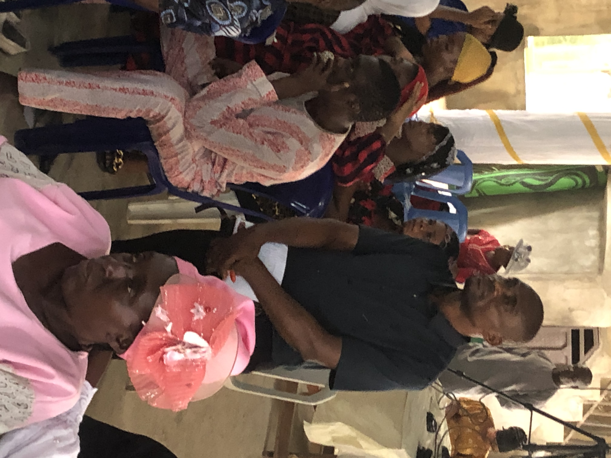
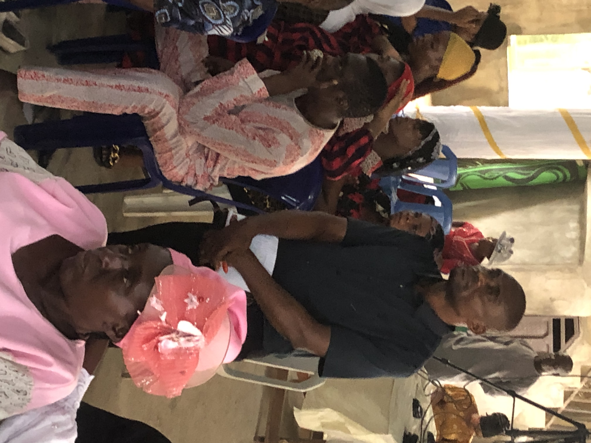

At Throne of Grace Bible Church, we are dedicated to fostering a community that reflects the holiness and love of Christ. Our mission is to guide believers on a journey toward Heaven at last, equipping them with biblical truths to live a victorious and modest Christian life. Rooted in the principles of faith, purity, and obedience, we provide a spiritual haven where lives are transformed, hearts are renewed, and souls are prepared for eternity. Together, we embrace the call to holiness and shine as lights in a world in need of God’s truth.

"General Superitendent."
"Branch Pastor."
"National programme Co-ordinator"
"Associate Evangelist HQ Rukpokwu"

"Youth Pastor"
"Associate Evangelist(Prayer Coordinator)"
"Obigbo Branch"
The inspired Word of God and is the final authority in all matters concerning Christian doctrine, conduct and work (II Tim. 3:15-17; Prov.3:5; Rev. 22:18, 19).
consists of three separate, distinct, and recognizable personalities and qualities, perfectly united in one (I Jn. 5:7; Mt. 3:!6, 17; I Cor. 13:14; Mt. 28:19).

JESUS is the ONLY BEGOTTEN SON of GOD, He was born of a virgin, was crucified, died, was buried and He resurrected bodily. He was not created but rather created all things (Jn. 1:1-3; 14:18; Is. 7:14; Mt. 1:18-25; Rom. 1:4; I Cor. 15:3,4).
We believe in the power of the Holy Spirit to transform lives.
We believe in the power of the Holy Spirit to transform lives.
Restitution, restoration of stolen things, paying of debts are important so as to have a conscience void of offence” (Gen. 20:1-8, 14-18; Ex. 22:1-7; Acts 23:1-5; 24:16; Js. 4:17).
The Lord's was instituted by Jesus Christ for all believers, to “shew the Lord’s death till He come”. The emblems used are unleavened bread and unfermented juice of “fruit of the vine” and must not be eaten unworthily (Mt.26:29; Lk. 22:17-20; I Cor. 11:23-30).
Entire Sanctification is subsequent to the New Birth attained by grace by which the believer’s heart is purified and made holy. (Lk. 1:74, 75; Jn. 17:15-17; I Thess. 4:3, 7, 8; 5:22-24).
Baptism in the holy ghost is the enduement of power from on High upon sanctified believers (Lk. 4:49; Acts 1:8; 2:1-8; Joel 2:28, 29).
Speaking in tongues is the utterance given by the Holy Spirit. Interpretation of tongues is also a gift of the Holy Spirit. Gifts of the Spirit are for today (I Cor. 12:1-31; 13:1-40).

Marriage is binding for life. There is no room for divorce and remarry while the first companion is still alive. There is no polygamy and Christian marriage is between two born again Christians (Gen. 2:24; Deut. 7:1-4; II Cor. 6:14-18; Mt.19:3 – 9; Mal. 2:13-16; Rom. 7:2, 3).

The great tribulation will be a time of terrible suffering on earth (Mt.24: 21, 22, 29; Mk. 13:19; II Thess. 2:3-12). The ANTICHRIST will rule the world and will terrorize people. He is not a system but a supernatural, diabolical person who will proclaim himself to be God (Dan. 8:23-24; II Thess. 2:7-12; Rev. 13:1-10).
Rapture is the catching away of all Christian saints (Dead or alive) from the earth. They will meet Jesus in the air (I Thess. 4:16-18; Jn. 14:1-3; II Thess. 2:5-7). There shall be the marriage supper of the lamb, between Jesus (The Bridegroom) and the raptured saints (The Bride). This is going to be in heaven (Rev. 19:1-10).
There will be the resurrection of all the dead, some to honour and glory and others to everlasting shame and contempt. (Ps. 71:20; Is. 26:19; Dan. 12:2; Jn. 5:28, 29; I Cor. 15:12-57; I Thess. 4:13-16).
The second coming of christ to execute judgment on the ungodly and to give the final reward will be as literal and visible as His going away. (Mt. 24:31-46; Mk. 13:24-31; II Thess. 1:7-10; Acts 1:10-11; Jude 14, 15). The millenial reign is the 1,000 years literal reign of Jesus on earth, (Jude 14, 15; Rev. 20:2, 3).
The great white throne judgment is God’s final judgment on all (the living and the dead, small and great) who have ever lived on the face of the earth, according to their works (Rev. 20:11-15; Jn. 5:24, 25, 29; Dan. 12:2, 3; Mt. 11:21-24).

The new Heaven and the new Earth “wherein dwelleth righteousness” will be made by God and the redeemed shall dwell with God forever. This present earth will pass away (Rev. 21:1-7; 22:1-5; II Pt. 3:12, 13; Ps. 102:25, 26; Is. 65:17).
Hell fire is a literal place of everlasting punishment for the devil and his angels (Mt. 25:41). All sinners (who do not have their names written in Lamb’s book of life) will suffer torments therein forever and ever (Ps. 9:17; Rev. 20:10, 12-15; 21:8; Mt. 5:22, 30; Rev. 14:10, 11; Lk. 16:19-31).


 



Address: \ Road 3, Amadi New Layout, Behind Vondorix scool,Rukpokwu, Portharcourt, River State
Contact:0803 339 6368, 0902 415 9478, 0803 259 5002 | info@throneofgracebc.org
Address:349 Ikwerre Rd. Opp. OCC's Palace, Mile 4, Rumueme Mile 4, Portharcourt
Contact: 0813 197 2657, 0803 744 2823 | info@throneofgracebc.org
Address: Near Odo-Ojene, Amuzu Obinagu-Uwani, Akpugo Nkanu, Enugu State.
Contact: 0806 755 1076, 0813 939 8534| info@throneofgracebc.org
Address: Ihu-Ibe Okpanku, Aniri LGA, Enugu State.
Contact: 0812 697 9632, 0902 9105 176| info@throneofgracebc.org
Address: Oyigbo Church, 43 Ohita street, Mbano Camp Oyigbo, Riverstate
Contact:0806403 9983, 0913 325 3121| info@throneofgracebc.org
Address: Off Federal Junction, Umuolar Road, Okechi Etche, Rivers State
Contact:0815 120 0152, 0806 415 7284| info@throneofgracebc.org
Date:23rd-26th December 2024
Time: :500 AM
Venue: Church Headquaters
Learn MoreYour generous donation helps us bring positive change to the community and spread the message of hope. Join hands with us to make a difference!
Pastor’ Ambrose Elechi Alums is a dedicated servant of God, passionate about spreading the Gospel and guiding others in their spiritual journey. With many years of ministry experience, he is known for his engaging sermons and ability to make Scripture relevant to everyday life. Committed to building a loving and united community, Pastor Ambrose leads with humility, wisdom, and a heart for service. He has a special passion for specific focus, e.g., youth mentorship, family life, or missions, making heaven at last, working tirelessly to make a positive impact within and beyond the church. We are blessed to have Pastor Ambrose as our shepherd, alongside his wife Pst. Mrs Abigail Alum inspiring us to grow in faith and live out God’s love.